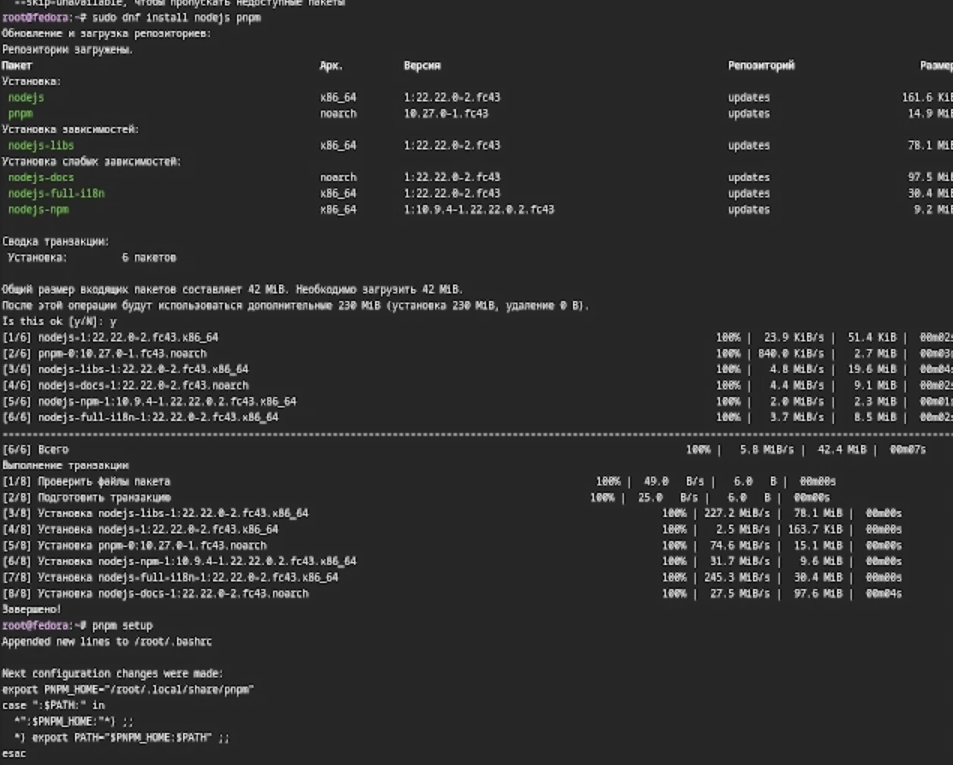
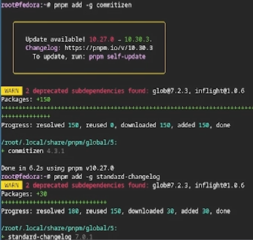
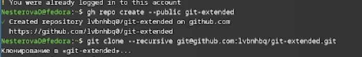
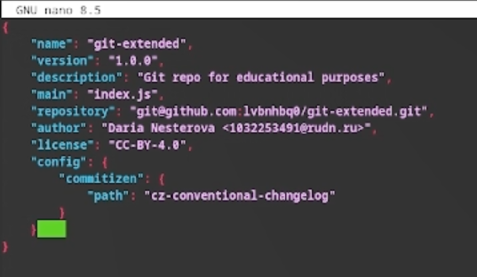
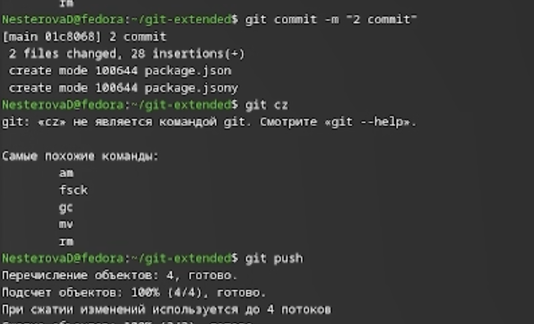
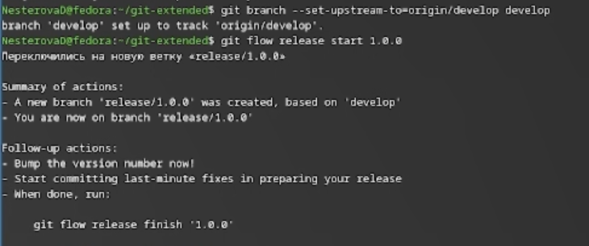
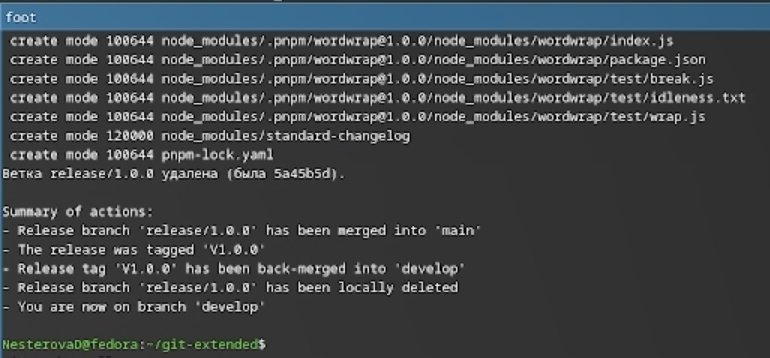
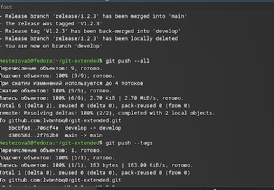

Освоение продвинутых методов работы с git-репозиториями и механизмами создания релизов.
Gitflow Workflow, опубликованная Винсентом Дриссеном, предполагает строгую модель ветвления с учетом выпуска проекта и включает создание отдельной ветки для исправления ошибок в рабочей среде. Семантическое версионирование (SemVer) задается в формате МАЖОРНАЯ.МИНОРНАЯ.ПАТЧ, где мажорная версия увеличивается при несовместимых изменениях API, минорная — при добавлении новой обратно совместимой функциональности, а патч-версия — при обратно совместимых исправлениях. Conventional Commits — это соглашение о структуре сообщений коммитов, которое тесно связано с SemVer и регламентирует основные типы коммитов.
Устанавливаю nodejs, пакетный менеджер для него pnpm и gitflow.

Устанавливаю через pnpm commitizen и standard-changelog.

Создаю новый репозиторий и делаю первый коммит.

Инициализирую и конфигурирую общепринятые коммиты в созданной директиории через редактирование файла package.json.

Делаю снимок изменений, создаю коммит и отправляю на удаленный репозиторий.

Инициализурю в репозитории git flow и создаю 1 релиз в только что созданной ветке develop.

Создаю список изменений через standard-changelog, заканчиваю релиз и выгружаю на удаленный репозиторий изменения.

Инициализирую ветку feature для работы над новой функциональностью, готовлю релиз и загружаю на github.

В результате выполнения лабораторной работы были освоены навыки корректной работы с git-репозиториями.